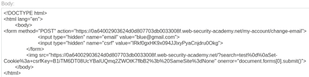

CSRF where token is tied to non-session cookie
- Provided with blog website, credentials “wiener:peter" and “carlos:montoya”, told to use provided exploit server to host HTML page that uses CSRF attack to change viewers email
- Logged in with provided credentials
- Intercepted change email request in burpsuite and dropped request after copying session key
- Intercepted search request and modified search query to: GET /?search=test%0d%0aSet-Cookie%3a+csrfKey=B1iTM6DT08UcYBaIUQmq2ZWOtK7flbB2%3b%20SameSite=None
- Made custom CSRF exploit payload in body section of exploit server:

- Delivered exploit to victim and completed lab successfully: